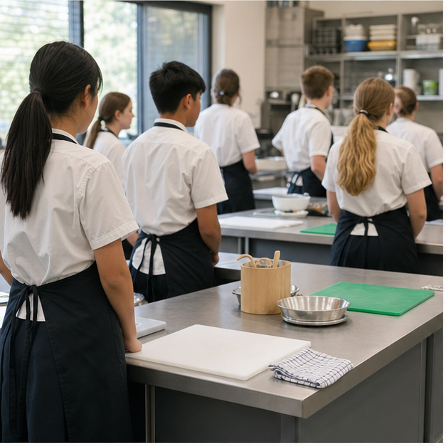
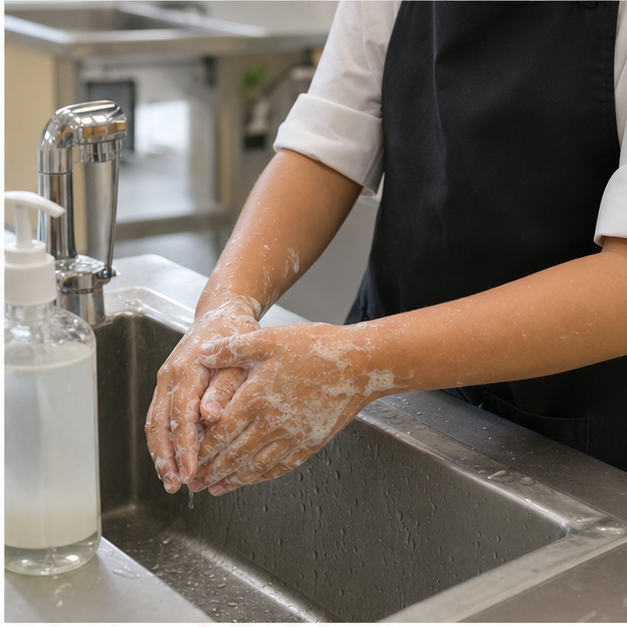
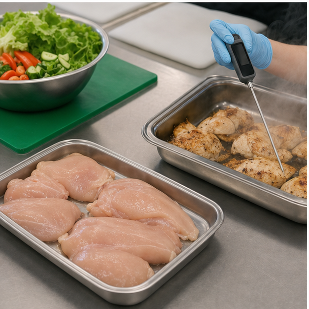
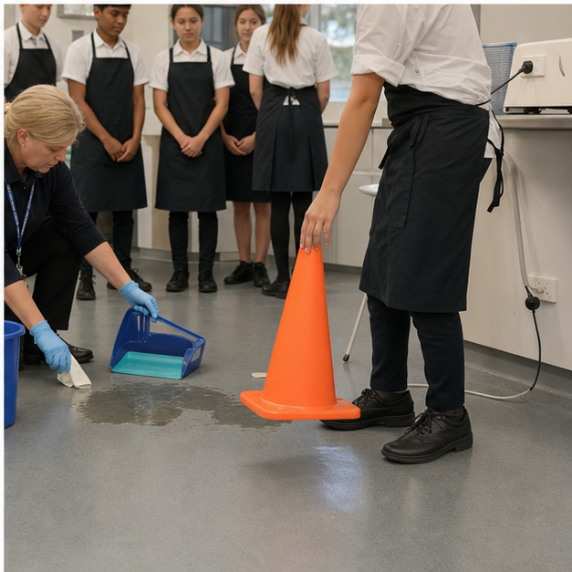

Class presentation
Module 1 — 8-slide lesson deck
Use the deck to introduce the three connected ideas, pause for decisions and hand evidence into the learning packages.

{kind=link}
Section 1.1
Personal hygiene and readiness
Learning intention: Explain how personal preparation interrupts contamination pathways and make a defensible readiness decision before handling food.
Success looks like
- I can connect each hygiene action to a contamination pathway it controls.
- I can distinguish clean-looking from food-safe.
- I can complete and justify a person-to-place readiness check.
Readiness is a food-safety control
Personal preparation happens before ingredients are touched because people can transfer microorganisms, allergens and foreign objects to food. A clean apron, restrained hair and washed hands are not just about appearance; each blocks a possible pathway. Readiness also includes reading the method, clearing the bench and deciding where clean equipment will go. The useful question is not “Do I look ready?” but “What could move from me or my surroundings into the food, and what action controls it?”

Why handwashing works
Hands collect material from phones, door handles, faces, bins, raw ingredients and shared equipment. Soap, friction and running water loosen and rinse away oils and soil; thorough drying reduces transfer from wet hands. A quick splash misses fingertips, thumbs, between fingers and around nails. Wash before food work and again after any action that may recontaminate the hands. Gloves can also become contaminated, so they never replace clean hands or thoughtful changes between tasks.
Clothing, hair and personal items
Protective clothing creates a cleaner outer layer between everyday clothes and food. Restraining hair prevents it falling into food and reduces repeated hand-to-hair contact. Jewellery, watches and long or damaged nails can trap soil, hinder washing or become physical hazards. Phones and bags belong away from food-preparation surfaces because they are frequently handled but rarely cleaned to a food-contact standard. Separating these items reduces unnecessary transfer opportunities.
Health, wounds and reporting
Vomiting, diarrhoea, fever or an infected wound must be reported to the supervising teacher before handling food so a safe role or alternative can be chosen. Cuts need a secure suitable covering and any additional protection required by the setting. Students should not diagnose themselves or hide symptoms to avoid missing a practical. Early reporting protects classmates, the food and the person who is unwell. It is responsible teamwork, not failure.
A calm person-to-place check
A useful routine moves from person to place: report health concerns, wash hands, secure hair and clothing, store personal items, check the bench and equipment, then review the method. If a control is missing, pause and correct it before starting. School-specific allergy procedures, approved clothing and room routines remain controlled by the teacher; follow the current lesson directions rather than guessing. Good preparation prevents avoidable interruptions and creates more time for careful food production.
Equivalent pathway — no video required
Person-to-place contamination audit
Purpose prompt: No video is required. Track one possible contaminant from a person or personal item to ready-to-eat food and identify the action that breaks the chain.
Read ‘Why handwashing works’ and ‘Clothing, hair and personal items’. Use the handwashing image to identify the control being applied. Then compare the two written readiness scenes in Applied activity 1.1, build one contamination chain and justify where the strongest early control belongs.
Learning package 1.10/10 + response
Use each explanation to repair your thinking as you go. All work saves only in this browser on this device.
Knowledge checks
Long response
Response scaffold
- Name five person-to-place checks in a logical order.
- For each check, identify what could be transferred or go wrong.
- Explain how the action interrupts that pathway.
- Include one example of recontamination after handwashing.
- Evaluate the misconception that clean-looking means food-safe.
Quality criteria
- Uses cause-and-effect reasoning rather than a rule list.
- Covers personal preparation and the work area.
- Distinguishes visible dirt from invisible contamination.
- Does not invent school-specific procedures.
Folio handoff: Save as “M1.1 Readiness control plan” with a labelled contamination-chain example and one question about local room procedures. Open My folio.
0/10 checks saved · long response still needs detail
Resume this packagePublic sources used for this section
Section 1.2
Contamination, temperature and food safety
Learning intention: Classify food hazards and use separation, cleaning, temperature and cumulative-time evidence to choose safe handling actions.
Success looks like
- I can distinguish biological, chemical, physical and allergen hazards.
- I can trace cross-contamination and place a control at the transfer point.
- I can apply Australian temperature and two-hour/four-hour guidance.
Four hazard categories
A food hazard is something with the potential to cause harm. Biological hazards include harmful microorganisms; chemical hazards include cleaning products or incorrect chemical use; physical hazards include fragments such as broken packaging; allergen hazards involve unintended contact with food that can cause a reaction. The categories make team thinking clearer, though one incident may involve more than one. The aim is to recognise plausible hazards early enough to control them, not to make food seem frightening.

Cross-contamination is a journey
Cross-contamination occurs when a hazard moves between food, people, tools or surfaces. Raw juices on a board can reach salad through a knife; unwashed hands can move material from a bin lid to bread; allergens can move through shared utensils or crumbs. Naming the route makes prevention precise. Separation, handwashing, clean equipment and an organised workflow interrupt the journey. A different-coloured board helps only when it is clean, correctly assigned and kept separate.
Temperature controls growth
Some foods support rapid bacterial growth if they remain warm too long. Australian guidance uses 5°C or colder for cold holding and 60°C or hotter for hot holding of potentially hazardous food. Cooking destroys many microorganisms but does not excuse contamination afterwards, and heat does not remove every hazard. A thermometer is stronger evidence than touch or steam. Safe handling combines measured temperature with clean storage, protection and minimal unnecessary time outside control.
The two-hour/four-hour rule
For potentially hazardous food between 5°C and 60°C, cumulative time matters. Under two hours, it may be used immediately or returned to refrigeration; from two to four hours, use it immediately; after more than four hours, discard it. Time accumulates across preparation, transport and display and does not restart when food moves. The rule supports decisions about food already outside control; it is not permission to leave food out deliberately.
Cleaning before sanitising
Cleaning removes scraps, grease and soil. Sanitising reduces microorganisms on an already clean food-contact surface. Sanitiser cannot work reliably through residue, so order matters: remove debris, wash, rinse when required, sanitise as directed and dry appropriately. Chemical labels and local procedures control concentration and contact time; students must not improvise mixtures. A strong chemical smell is not proof of safety and may signal a chemical hazard.
Equivalent pathway — no video required
Hazard-route investigation
Purpose prompt: No video is required. Which control stops each hazard earliest: separation, cleaning, time or temperature?
Trace the raw-food, salad and probe-thermometer setup in the image. Identify the separation control and the temperature check, then use the section theory to add cleaning, time and recontamination controls that cannot be seen in one photograph.
Learning package 1.20/10 + response
Use each explanation to repair your thinking as you go. All work saves only in this browser on this device.
Knowledge checks
Long response
Response scaffold
- Classify at least four hazards.
- Trace each source-to-food or source-to-person route.
- Place the earliest practical control on each route.
- Use 5°C, 60°C and one cumulative-time example accurately.
- Evaluate why appearance, smell or a coloured board alone is weak evidence.
Quality criteria
- Applies hazard categories accurately.
- Explains transfer and growth mechanisms.
- Uses Australian temperature and time guidance correctly.
- Combines controls rather than claiming one guarantee.
Folio handoff: Save as “M1.2 Hazard-route plan” with the annotated visual, time calculation and one decision per food. Open My folio.
0/10 checks saved · long response still needs detail
Resume this packageSection 1.3
Safe decisions and incident response
Learning intention: Use a calm stop–isolate–tell process and evidence-based risk reasoning to prevent escalation.
Success looks like
- I can distinguish a hazard, a risk and a control.
- I can choose a proportionate response without acting beyond my training.
- I can explain how near-miss information improves planning.
Hazard, risk and control
A hazard is a source of possible harm, such as a hot tray, wet floor, damaged lead or sharp blade. Risk considers how likely harm is and how serious it could be in the actual situation. A control reduces that likelihood or consequence. The same hazard can create different risk: a knife stored correctly is controlled, while the same knife hidden under washing-up water is an immediate danger. Clear language helps a team respond to the actual condition.

Stop, isolate and tell
When something becomes unsafe, stop the task, keep others clear where this can be done safely, and tell the supervising teacher. This creates time for a trained person to assess the situation. Rushing to fix an unfamiliar electrical, fire, chemical or injury incident can make it worse. Use emergency equipment only as instructed and within training. Calm communication should name the location, hazard, people affected and immediate control rather than shouting a vague warning.
Different incidents need different controls
A spill creates slip risk and may spread contamination; broken material adds a physical hazard; a cut affects both person and food; a burn needs prompt teacher-led first-aid response; smoke or an electrical fault may need authorised isolation or evacuation. The response must match the hazard. Picking up unseen fragments by hand is not a safe shortcut, and food exposed during an incident may be contaminated. Follow current room procedures.
Prevention through workflow
Many incidents are easier to prevent than manage. Stable boards, handles away from edges, dry floors, uncluttered routes, safe carrying and staged mise en place reduce collisions and rushed decisions. Controls are strongest when designed into the workflow. Before a practical, ask what changes during heating, cutting, carrying and cleaning, and where hands, people or hazards could cross. The answers guide equipment placement, timing and roles.
Learning without blame
Incident and near-miss information reveals weak controls. Reflection should improve equipment, layout, instruction or timing, not embarrass someone. Separate fact from inference: what was observed, what happened immediately before, which control was missing or failed, and what change should be tested. A near miss can be valuable even when no injury occurred. Honest reporting supports a safer food room and lets the class act before the same pathway causes harm.
Equivalent pathway — no video required
Stop–isolate–tell scenario walkthrough
Purpose prompt: No video is required. What is the safest first action, and what should wait for an authorised person?
Use the spill-response image as one worked example. Then use the four written incident cards in Applied activity 1.3 to record an observed fact, possible harm, immediate stop–isolate–tell action and one prevention change for each.
Learning package 1.30/10 + response
Use each explanation to repair your thinking as you go. All work saves only in this browser on this device.
Knowledge checks
Long response
Response scaffold
- Describe only directly observed facts.
- Name hazard, likely harm, likelihood and consequence.
- Sequence the first three actions and justify the order.
- Identify actions reserved for trained or authorised people.
- Redesign layout, timing or roles to break the pathway.
Quality criteria
- Separates fact from inference and avoids blame.
- Uses hazard, risk and control accurately.
- Keeps actions within a student's role.
- Links redesign to the original pathway.
Folio handoff: Save as “M1.3 Near-miss redesign” with before-and-after workflow sketches and one measure of success. Open My folio.
0/10 checks saved · long response still needs detail
Resume this packagePublic sources used for this section
End-of-module review
Check, repair and save
- Revisit Personal hygiene and readinessContinue
- Revisit Contamination, temperature and food safetyContinue
- Revisit Safe decisions and incident responseContinue
Open this module’s Applied Learning Activities · Open its media pathways · Keep selected evidence in My folio